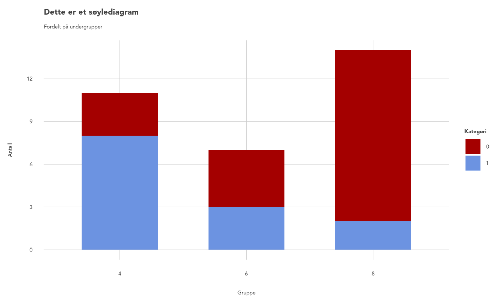
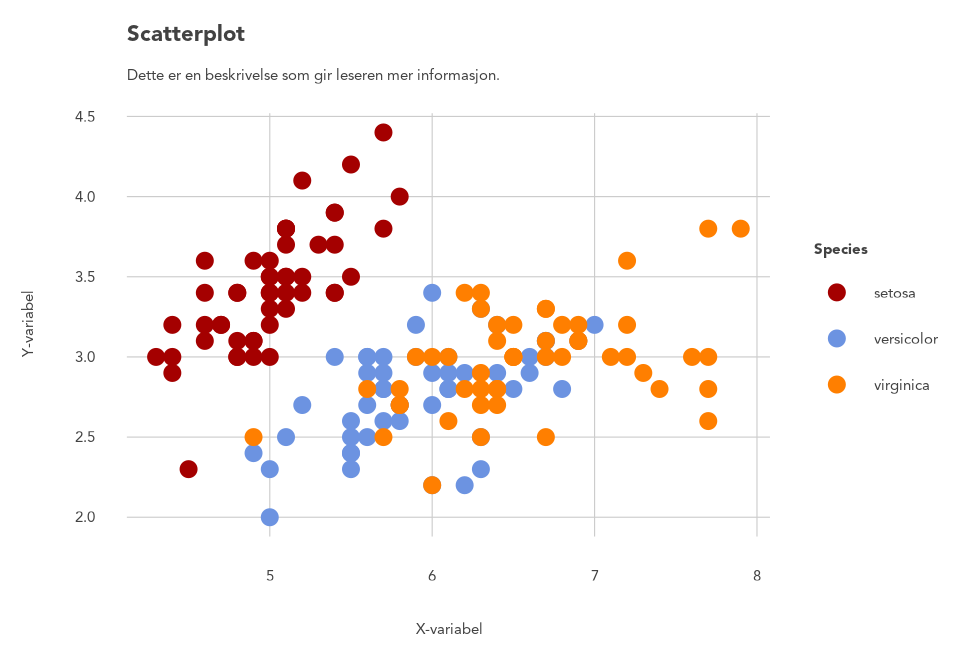
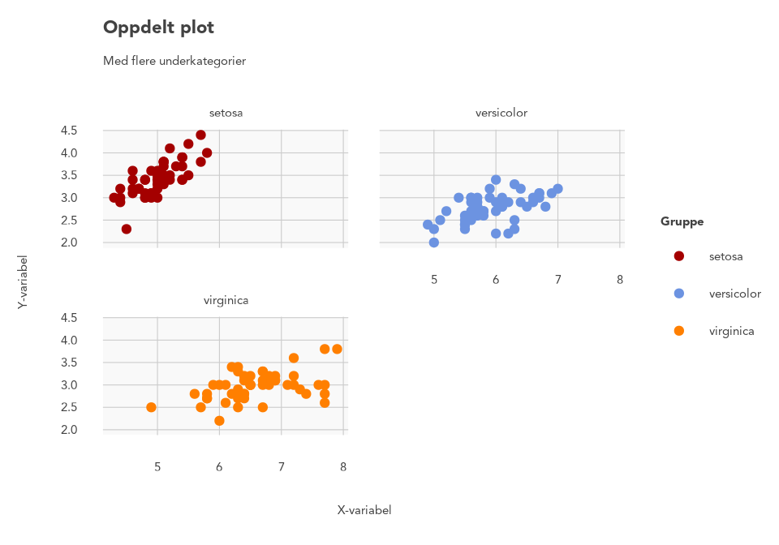
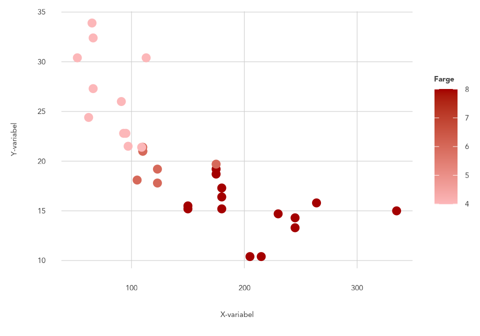
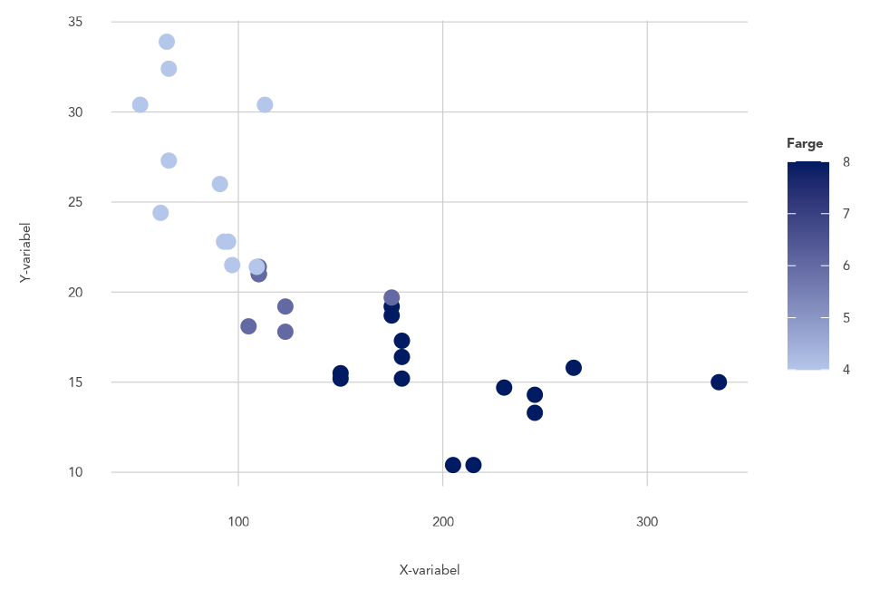
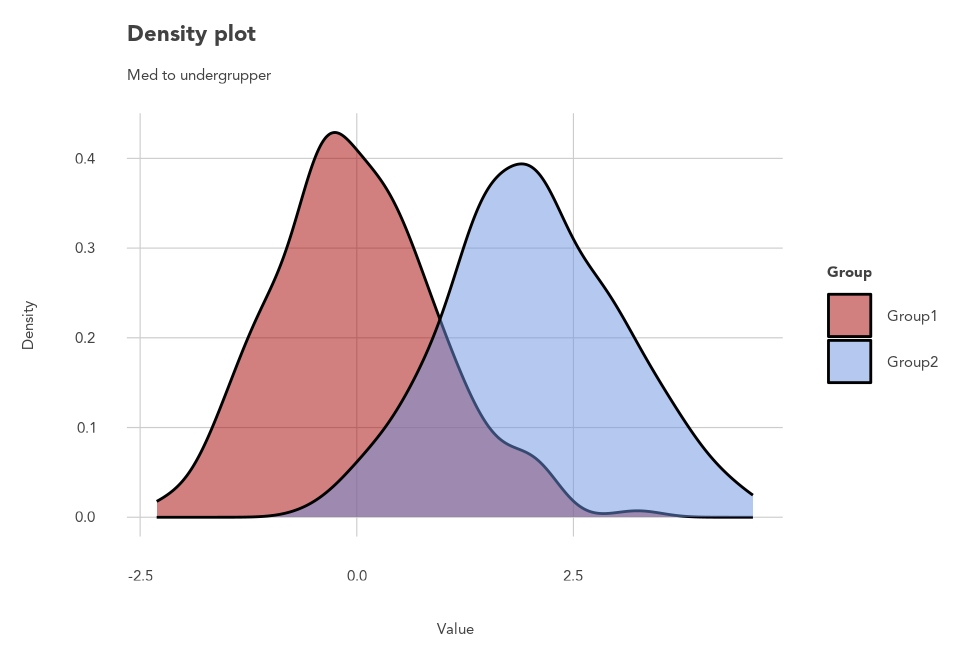
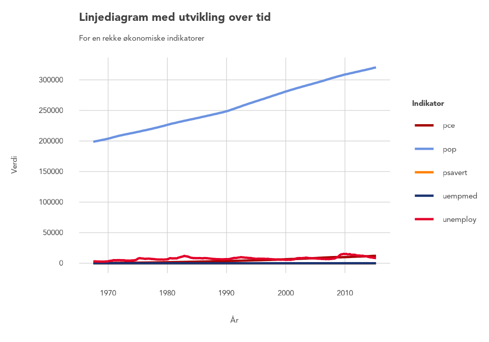
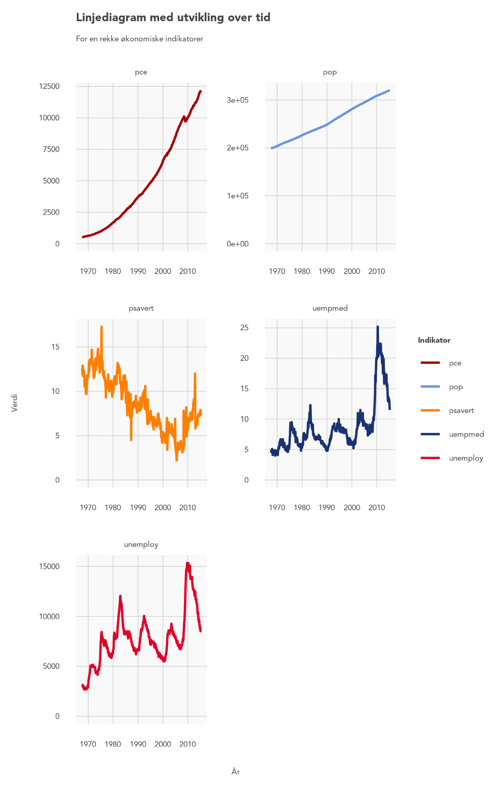
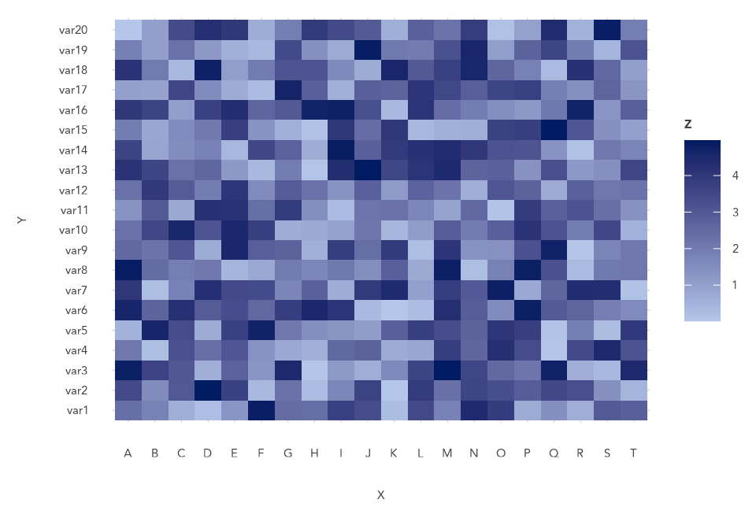
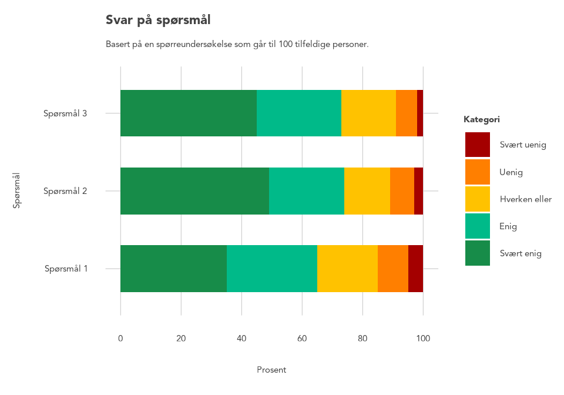

Introduction
introduction.RmdThis vignette provides examples on how to use different plotting functions.
Bar chart
mtcars |>
ggplot(aes(x = factor(cyl),
fill = factor(am))) +
theme_RR() +
geom_bar_RR() +
labs(title = "Dette er et søylediagram",
subtitle = "Fordelt på undergrupper",
x = "Gruppe",
y = "Antall",
fill = "Kategori") +
scale_fill_RR()
#> Warning: The `size` argument of `element_line()` is deprecated as of ggplot2 3.4.0.
#> ℹ Please use the `linewidth` argument instead.
#> ℹ The deprecated feature was likely used in the rrplot2 package.
#> Please report the issue to the authors.
#> This warning is displayed once every 8 hours.
#> Call `lifecycle::last_lifecycle_warnings()` to see where this warning was
#> generated.
#> Warning: The `margin` argument should be constructed using the
#> `margin()` function.
Scatter plot (discrete palette)
One plot
iris |>
ggplot(aes(x = Sepal.Length,
y = Sepal.Width,
color = Species)) +
theme_RR() +
geom_point_RR() +
labs(title = "Scatterplot",
subtitle = "Dette er en lenger beskrivelse over flere linjer\nsom gir leseren mer informasjon.",
x = "X-variabel",
y = "Y-variabel") +
scale_color_RR()
#> Warning: The `margin` argument should be constructed using the
#> `margin()` function.
Small multiples
iris |>
ggplot(aes(x = Sepal.Length,
y = Sepal.Width)) +
geom_point(aes(color = Species)) +
facet_wrap(~ Species,
nrow = 2) +
theme_RR() +
scale_color_RR() +
labs(x = "X-variabel",
y = "Y-variabel",
color = "Gruppe",
title = "Oppdelt plot",
subtitle = "Med flere underkategorier")
#> Warning: The `margin` argument should be constructed using the
#> `margin()` function.
Scatter plot (continuous palette)
Red
mtcars |>
ggplot(aes(x = hp,
y = mpg,
color = cyl)) +
theme_RR() +
geom_point_RR() +
labs(x = "X-variabel",
y = "Y-variabel",
color = "Farge") +
scale_color_continuous_RR_red()
#> Warning: The `margin` argument should be constructed using the
#> `margin()` function.
Blue
mtcars |>
ggplot(aes(x = hp,
y = mpg,
color = cyl)) +
theme_RR() +
geom_point_RR() +
labs(x = "X-variabel",
y = "Y-variabel",
color = "Farge") +
scale_color_continuous_RR_blue()
#> Warning: The `margin` argument should be constructed using the
#> `margin()` function.
Density plot
# Generate example data
set.seed(123)
data <- data.frame(
Group = rep(c("Group1", "Group2"), each = 200),
Value = c(rnorm(200, mean = 0, sd = 1), rnorm(200, mean = 2, sd = 1)))
# Create density plot
data |>
ggplot(aes(x = Value, fill = Group)) +
theme_RR() +
geom_density_RR(alpha = 0.5) +
labs(x = "Value", y = "Density",
fill = "Group",
title = "Density plot",
subtitle = "Med to undergrupper") +
scale_fill_RR()
#> Warning: The `margin` argument should be constructed using the
#> `margin()` function.
Line chart (simple)
One plot
data("economics_long")
economics_long |>
ggplot(aes(x = date, y = value, color = variable)) +
geom_line_RR(linewidth = 0.8) +
labs(title = "Linjediagram med utvikling over tid",
subtitle = "For en rekke økonomiske indikatorer",
x = "År",
y = "Verdi",
color = "Indikator") +
theme_RR() +
scale_color_RR()
#> Warning: The `margin` argument should be constructed using the
#> `margin()` function.
Small multiples
economics_long |>
ggplot(aes(x = date, y = value, color = variable)) +
geom_line_RR(linewidth = 0.8) +
labs(title = "Linjediagram med utvikling over tid",
subtitle = "For en rekke økonomiske indikatorer",
x = "År",
y = "Verdi",
color = "Indikator") +
theme_RR() +
scale_color_RR() +
facet_wrap(~variable, scales = "free",
nrow = 3) +
scale_y_continuous(limits = c(0, NA))
#> Warning: The `margin` argument should be constructed using the
#> `margin()` function.
#> Scale for y is already present.
#> Adding another scale for y, which will replace the existing scale.
Heat map
Blue
# Dummy data
x <- LETTERS[1:20]
y <- paste0("var", seq(1,20))
data <- expand.grid(X=x, Y=y)
data$Z <- runif(400, 0, 5)
# Heatmap
data |>
ggplot(aes(X,
Y,
fill= Z)) +
geom_tile() +
theme_RR() +
scale_fill_continuous_RR_blue()
#> Warning: The `margin` argument should be constructed using the
#> `margin()` function.
Red
data |>
ggplot(aes(X,
Y,
fill= Z)) +
geom_tile() +
theme_RR() +
scale_fill_continuous_RR_red()
#> Warning: The `margin` argument should be constructed using the
#> `margin()` function.Survey data
Blue likert color scale
data <- data.frame(
Question = rep(c("Spørsmål 1", "Spørsmål 2", "Spørsmål 3"), each = 5),
Response = rep(c("Svært uenig", "Uenig", "Hverken eller", "Enig", "Svært enig"), times = 3),
Count = c(5, 10, 20, 30, 35, 3, 8, 15, 25, 49, 2, 7, 18, 28, 45)
)
data$Response <- factor(data$Response,
levels = c("Svært uenig", "Uenig", "Hverken eller", "Enig", "Svært enig"))
data |>
ggplot(aes(x = Question, y = Count, fill = Response)) +
geom_bar_RR(stat = "identity") +
coord_flip() +
labs(title = "Svar på spørsmål",
subtitle = "Basert på en spørreundersøkelse som går til 100 tilfeldige personer.",
fill = "Kategori",
x = "Spørsmål", y = "Prosent") +
theme_RR() +
scale_fill_traffic_blue_RR()
#> Warning: The `margin` argument should be constructed using the
#> `margin()` function.Green likert color scale
data |>
ggplot(aes(x = Question, y = Count, fill = Response)) +
geom_bar_RR(stat = "identity") +
coord_flip() +
labs(title = "Svar på spørsmål",
subtitle = "Basert på en spørreundersøkelse som går til 100 tilfeldige personer.",
fill = "Kategori",
x = "Spørsmål", y = "Prosent") +
theme_RR() +
scale_fill_traffic_green_RR()
#> Warning: The `margin` argument should be constructed using the
#> `margin()` function.